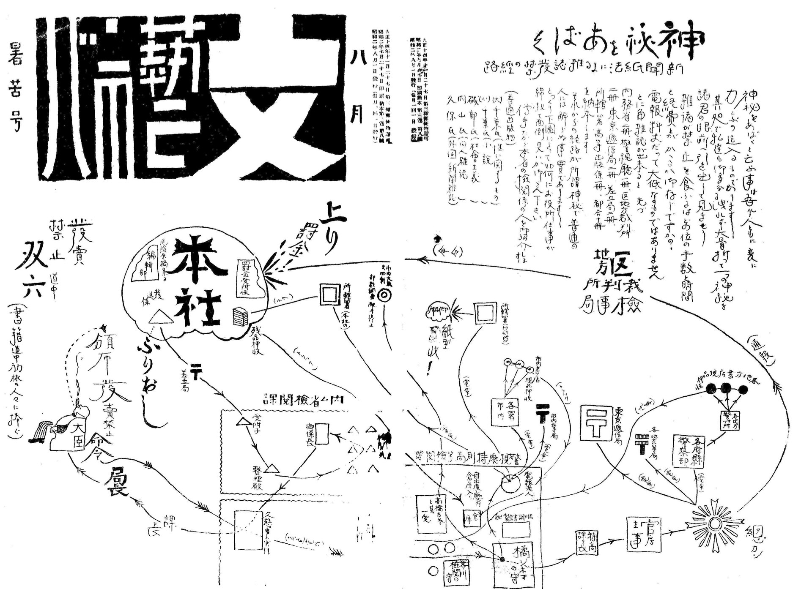

The two diagrams above map the publication process from two different perspectives. The image on the left maps the process from the mainstream publisher’s perspective; the image on the right lays out the process for more risqué publications.
If the processes of production are marked by bureaucratic derailments and deadlines, what about those of reception? Can reception be interrupted and disrupted? Can it be highly efficient? Do we receive a text in an instant, like the purchase of a book? Or are there processes of reception that are a corollaries to the processes of production outlined in the diagrams above?
When does reception begin? When we first hear about a text? When we first learn something of its author? When we first come to know or experience something of its subject matter? Can the process of reception start before the text was published, before there is an object to be received? Can it only be started in retrospect after the entirety has been read and digested?
When does reception end? When we finish reading? When we finishing making meaning from the text? When we have long forgotten about the text?
Although specific censors can be located at particular points on maps of reception or production processes, the work of censorship itself is never fixed to a particular place on the road from inception to consumption. Censorship begins work on a text long before the text comes in direct contact with a censor and continues to work on a text long after the censor’s demise. My book project articulates a new method for elaborating this ceaseless work of censorship in relation to literature.
CLICK HERE TO READ ABOUT MY BOOK which works through issues of literary reception by focussing on the most well-documented reader of all, the censor.
CLICK HERE TO READ AN ARTICLE IN THE ASAHI SHIMBUN about my recent discoveries at the Prange.
Circuits and Short-circuits of Production and Reception


The Rhetoric of a New Real
2014
2009
My current research project focusses on the stubborn presence and penetration of the marketing rhetoric of “new” into semantic, aesthetic, and ethical discussion. “The New Real: Marketing Media in an Age of Cynicism,” argues that the simultaneous rise of global interest in new media and Japanese pop culture are similarly positioned to fail their producers and consumers due to a nearly universal, pronounced skepticism about the power of content. Or to put it another way, the hagiography of media and new media since the 1960s oddly coincides with pronounced cynicism about the importance content and message. This alignment of corporate desire and intellectual pursuit has created a situation of diverse disciplines attempting to reinvent the wheel, discovering purportedly “new” modes of meaning making through willful ignorance about historical modes.
If new media convey realities differently from their predecessors, at least the terms with which we assess that difference remain unchanged. In recent visual media, Cartesian perspective continues to hold sway via 3D technologies, multiplanar formats, and parallax theories. In textual production, mimesis continues as a key factor for assessing new forms from alternative history fiction to cell phone novels, despite any real or perceived change in transmission device and change of terminology from mimesis to virtuality. In social media, fictional avatars and pseudonyms simply render the already performative aspects of personality present in older media conventions in more stark relief; MyFace-ist sites are simply today’s totems that stand in the center our global village.
As such new media inevitably repeat the aesthetic and representational paradoxes of older media. Similarly, attempts to capitalize on a burgeoning interest in cool Japan render it uncool through meticulous explanation. Thus, I have argued in my recent article “The Possibilities and Impossibilities of a Cool Japanology” that pop cultural studies and media studies conflict with the nature “cool” and “new” because these terms are premised on mystique, lack of understanding, and historical ignorance. When the notion of cool treats Japanese content as empty and unknowable, cool Japan becomes just yet another exoticized and fetishized media devoid of message bearing content. Ultimately, “The New Real” shows how content continues to play a major, though neglected role, in media and cultural studies.
Topics for this investigation include:
The quasi-fictional role of Japan both within Japan and outside. (Virtuality)
The role of self virtualization in early Meiji period Japanese stereoscopic photography. (3D)
The supplement to early audio recordings in Japan after the advent of international copyright. (DRM)
The hidden nature of postwar justice as seen through early television superheroes. (Cool/Hot Media and Media Mix)
The role of worlded fictional spaces in otaku cultures. (Anime)
The claim of capturing the real in the advent of digital novels. (Hypertext to cell phone)
Alternate reality fiction as a method for reclaiming content.
New Media and Cool Japan in the Age Cynicism
Reading Maps